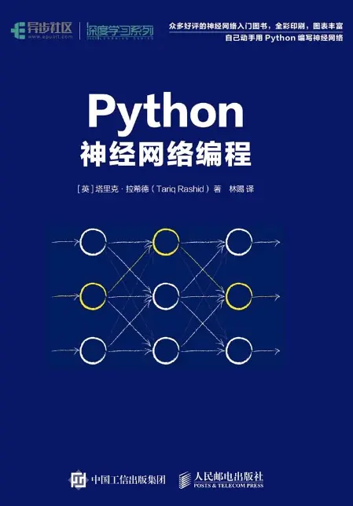
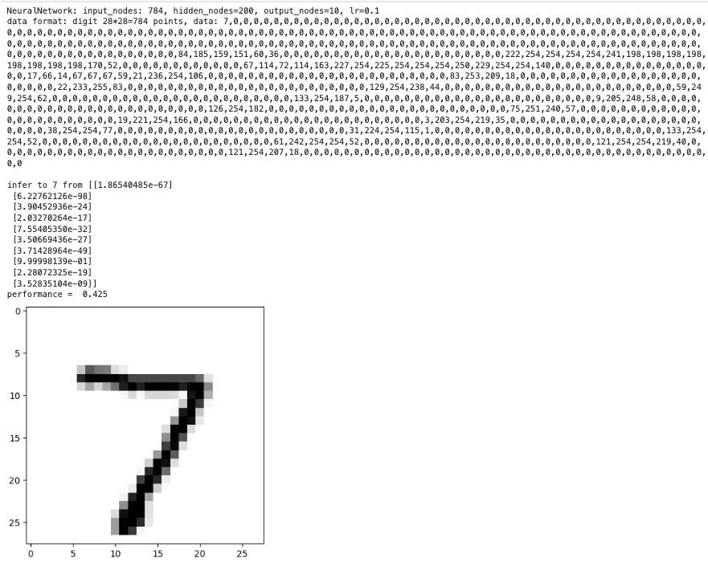

神经网络的 Hello World - 手写数字识别
Posted on Sat 13 July 2024 in Journal
| Abstract | 神经网络的 Hello World - 手写数字识别 |
|---|---|
| Authors | Walter Fan |
| Category | learning note |
| Status | v1.0 |
| Updated | 2024-07-13 |
| License | CC-BY-NC-ND 4.0 |
就象编程语言中的 hello world 那样, 手写数字识别是神经网络入门最常用的例子. 它的训练和测试数据集可通过 https://www.kaggle.com/datasets/oddrationale/mnist-in-csv 下载
它分为两部分:
- mnist_train.csv 训练数据集
- mnist_test.csv 测试数据集
mnist_train.csv 文件包含 60,000 个训练示例和标签。mnist_test.csv 包含 10,000 个测试示例和标签。每行由 785 个值组成：第一个值是标签（从 0 到 9 的数字），其余 784 个值是像素值（从 0 到 255 的数字）。
神经网络入门
神经网络（Neural Networks）是一种受人脑结构启发的计算模型，它模仿人脑中神经元的连接和交互方式来处理信息。神经网络由一系列节点（或称为“神经元”）组成，这些节点在层（或称为“层级”）中组织。每个节点可以接收输入，对输入进行加权求和，然后通过一个非线性激活函数来生成输出。
神经网络的一些关键概念有：
- 神经元（Neuron）：
-
神经网络的基本单元，每个神经元接收一组输入值，进行加权求和，并可能添加一个偏置项。
-
层（Layer）：
- 神经元的集合，通常分为输入层、隐藏层和输出层。
- 输入层接收原始数据。
- 隐藏层是中间层，可以有多个，用于提取特征和进行非线性变换。
-
输出层产生最终的预测或分类结果。
-
权重（Weight）：
-
每个神经元的输入都有一个权重，这些权重决定了输入信号对神经元输出的影响大小。
-
偏置（Bias）：
-
加在加权求和的输入上的一个值，用于调整神经元激活的阈值。
-
激活函数（Activation Function）：
- 一个数学函数，用于在神经元的加权求和之后引入非线性，使得网络能够学习和执行更复杂的任务。
-
常见的激活函数包括 Sigmoid、Tanh、ReLU（Rectified Linear Unit）等。
-
前向传播（Forward Propagation）：
-
数据在神经网络中的流动方向，从输入层通过隐藏层到输出层。
-
损失函数（Loss Function）：
-
衡量模型预测值与实际值差异的函数，用于指导模型训练过程中的优化。
-
反向传播（Backpropagation）：
-
一种训练神经网络的算法，通过计算损失函数关于网络参数的梯度，并利用这些梯度来更新网络的权重和偏置。
-
优化器（Optimizer）：
-
用于在训练过程中更新网络权重的算法，如梯度下降、Adam、RMSprop 等。
-
训练（Training）：
- 使用大量数据和损失函数来调整网络权重和偏置，使模型能够准确地预测或分类新数据。
-
过拟合（Overfitting）：
- 模型在训练数据上表现很好，但在未见过的数据上表现差，即模型对训练数据过度学习。
-
正则化（Regularization）：
- 一种技术，用于减少过拟合，如 L1、L2 正则化或 Dropout。
-
学习率（Learning Rate）:
- 学习率是一个标量值，用于乘以损失函数关于模型参数的梯度。这个乘积决定了在每次迭代中更新模型参数的步长。
- 学习率决定了在梯度下降或其他优化算法中，模型参数更新的幅度。如果步长太大，可能会越过最小值点；如果步长太小，训练过程会非常缓慢。
- 初始学习率的设定通常是基于经验和实验。一些常见的初始学习率值包括 0.01、0.001、0.0001 等。
-
在训练过程中，可能需要根据模型的表现调整学习率。一些常见的调整策略包括：
- 固定学习率：在整个训练过程中保持不变。
- 学习率衰减：随着训练的进行逐渐减小学习率。
- 周期性调整：周期性地增加或减少学习率。
- 自适应学习率：根据模型的损失变化自动调整学习率，如 Adam 优化器。
-
如果学习率设置得过小，模型可能需要很长时间才能收敛，或者可能陷入局部最小值而无法达到全局最小值。
- 如果学习率设置得过大，模型可能无法收敛，甚至发散。
- 不同的优化器对学习率的处理方式不同。例如，SGD（随机梯度下降）使用简单的学习率乘以梯度，而 Adam 优化器则使用自适应学习率，为每个参数计算一个单独的学习率。
- 在训练的初始阶段，逐渐增加学习率，可以帮助模型更快地收敛。
- 使用学习率查找算法（如 Learning Rate Range Test）可以帮助确定合适的学习率范围。
以一个基本的多层感知器（MLP）为例，这是一种常见的前馈神经网络：
当然，下面是一个简化的神经网络示意图，它展示了一个基本的多层感知器（MLP），这是一种常见的前馈神经网络：
输入层 隐藏层 输出层
[特征1] --> [神经元1] --> [输出1]
| | |
[特征2] --> [神经元2] --> [输出2]
| | |
... ... ...
[特征N] --> [神经元M] --> [输出K]
- 输入层：表示神经网络接收的输入特征，每个特征对应一个输入节点。在这个例子中，有N个特征。
- 隐藏层：输入层的每个节点都连接到隐藏层的每个神经元。隐藏层可以有多个，每个隐藏层可以包含多个神经元。在这个例子中，隐藏层有M个神经元。
- 权重和偏置：每个连接都有一个权重（W），每个神经元都有一个偏置（b）。权重和偏置是神经网络的参数，它们在训练过程中被调整。
- 激活函数：隐藏层的每个神经元都有一个激活函数（通常是非线性的），它决定了神经元是否以及如何激活。
- 输出层：隐藏层的输出连接到输出层。输出层的每个神经元对应一个最终的输出，在这个例子中，输出层有K个输出。
这个示意图展示了数据在神经网络中的流动过程：
- 输入特征被送入输入层。
- 数据通过权重和偏置加权求和，然后通过激活函数。
- 激活后的信号在隐藏层中进行处理，可能经过多个隐藏层。
- 最终，输出层产生模型的预测结果。
手写神经网络代码
作为一个传统程序员, 我以为我是搞不懂这些东西, 直至翻到了这本书 - "Python 神经网络编程" 
这本书对入门者太友好了, 我几乎是一口气读下来的, 很久没有这样读一本技术书籍了, 下面的代码也是我边看书边手敲的, 也就 150 行左右的代码, 就构造了一个简单的神经网络, 用来识别手写数字
#!pip install scipy
import numpy
import matplotlib.pyplot as plt
import scipy.special
%matplotlib inline
class NeuralNetwork:
# 初始化神经网络
def __init__(self, **kwargs):
# 构建 n 个结点的输入层
self.input_nodes = int(kwargs.get("input_nodes"))
# 构建 n 个结点的隐藏层
self.hidden_nodes = int(kwargs.get("hidden_nodes"))
# 构建 n 个结点的输出层
self.output_nodes = int(kwargs.get("output_nodes"))
# 设置学习率
self.learning_rate = float(kwargs.get("learning_rate"))
print(f"NeuralNetwork: input_nodes: {self.input_nodes}, hidden_nodes={self.hidden_nodes}, output_nodes={self.output_nodes}, lr={self.learning_rate}")
# 创建 m*n 的权重矩阵, 数据为 -0.5 到 +0.5 之间的随机值
#self.wih = numpy.random.rand(self.hidden_nodes, self.input_nodes) - 0.5
#self.who = numpy.random.rand(self.output_nodes, self.hidden_nodes) - 0.5
# 创建 m*n 的权重矩阵, 数据为正态分布的的权重矩阵, 以 0.0 为分布中心值, 以 3^(-0.5) 为标准方差
# weight between input layer and hidden layer
self.wih = numpy.random.normal(0.0, pow(self.hidden_nodes, 0.5), (self.hidden_nodes, self.input_nodes))
# weight between hidden layer and output layer
self.who = numpy.random.normal(0.0, pow(self.hidden_nodes, 0.5), (self.output_nodes, self.hidden_nodes))
# 设置激活函数
self.activation_function = lambda x: scipy.special.expit(x)
# 训练神经网络
def train(self, input_list, target_list):
# convert inputs list to 2d array
inputs = numpy.array(input_list, ndmin=2).T
targets = numpy.array(target_list, ndmin=2).T
# calculate signals into hidden layer
hidden_inputs = numpy.dot(self.wih, inputs)
# calculate the signals emerging from hidden layer
hidden_outputs = self.activation_function(hidden_inputs)
final_inputs = numpy.dot(self.who, hidden_outputs)
# calculate signals emerging from final output layer
final_outputs = self.activation_function(final_inputs)
# 计算误差 target - actual
output_errors = targets - final_outputs
# 隐藏层的误差 hidder_errors 可由权重 output_errors 经权重 who 进行分割得出
hidden_errors = numpy.dot(self.who.T, output_errors)
# 更新隐藏层与输出层之间的权重
self.who += self.learning_rate * numpy.dot((output_errors * final_outputs * (1.0 - final_outputs)), numpy.transpose(hidden_outputs))
# 更新输入层与隐藏层之间的权重
self.wih += self.learning_rate * numpy.dot((hidden_errors * hidden_outputs * (1.0 - hidden_outputs)), numpy.transpose(inputs))
# 查询神经网络, 接收输入, 产生输出
def query(self, input_list):
# convert inputs list to 2d array
inputs = numpy.array(input_list, ndmin=2).T
# calculate signals into hidden layer
hidden_inputs = numpy.dot(self.wih, inputs)
# calculate the signals emerging from hidden layer
hidden_outputs = self.activation_function(hidden_inputs)
final_inputs = numpy.dot(self.who, hidden_outputs)
# calculate signals emerging from final output layer
final_outputs = self.activation_function(final_inputs)
return final_outputs
def load_data(data_file, count=0):
data_list = []
line_num = 0
with open(data_file, 'r', newline='', encoding='utf-8') as fp:
for line in fp:
data_list.append(line)
line_num += 1
if count > 0 and line_num >= count:
break
return data_list
# 训练数据
def train(nn, training_data_list, output_nodes):
epochs = 5
for e in range(epochs):
# go through all records in the training data set
for record in training_data_list:
# split the record by the ',' commas
all_values = record.split(',')
# scale and shift the inputs
inputs = (numpy.asfarray(all_values[1:]) / 255.0 * 0.99) + 0.01
# create the target output values (all 0.01, except the desired label which is 0.99)
targets = numpy.zeros(output_nodes) + 0.01
# all_values[0] is the target label for this record
targets[int(all_values[0])] = 0.99
nn.train(inputs, targets)
# 测试数据
def test(nn, test_data_list):
scorecard = []
loop_num = 0
# go through all the records in the test data set
for record in test_data_list:
# split the record by the ',' commas
all_values = record.split(',')
# correct answer is first value
correct_label = int(all_values[0])
# scale and shift the inputs
inputs = (numpy.asfarray(all_values[1:]) / 255.0 * 0.99) + 0.01
# query the network
outputs = nn.query(inputs)
# the index of the highest value corresponds to the label
label = numpy.argmax(outputs)
if loop_num == 0:
draw_digit(record)
print(f"infer to {label} from {outputs}")
# append correct or incorrect to list
if (label == correct_label):
# network's answer matches correct answer, add 1 to scorecard
scorecard.append(1)
else:
# network's answer doesn't match correct answer, add 0 to scorecard
scorecard.append(0)
loop_num += 1
return scorecard
# 维护手写数字
def draw_digit(data):
print(f"data format: digit 28*28=784 points, data: {data}")
values = data.split(',')
image_array = numpy.asfarray(values[1:]).reshape(28, 28)
plt.imshow(image_array, cmap='Greys', interpolation='None')
if __name__ == '__main__':
# 构造神经网络
nn = NeuralNetwork(input_nodes=784, hidden_nodes=200, output_nodes=10, learning_rate=0.1)
# 取 1000 条数据来训练
data_count = 1000
# load the mnist training data CSV file into a list - 60000 titakt
training_data_list = load_data("mnist_train.csv", data_count)
train(nn, training_data_list, 10)
# load the mnist test data CSV file into a list - 10000 totally
test_data_list = load_data("mnist_test.csv", data_count)
scorecard = test(nn, test_data_list)
# calculate the performance score, the fraction of correct answers
scorecard_array = numpy.asarray(scorecard)
print ("performance = ", scorecard_array.sum() / scorecard_array.size)
输出如下

我们构造了一个三层的神经网络, 输入层有 784 个节点, 隐藏层有 200 个节点, 输出层有 10 个节点 以上面的 "7" 这个数字为例, 可以看到输出的节点中第 7 个节点的值最高, 也就是 7 的可能性最大, 从而识别出这个手写数字